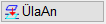
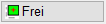

IFC Section Tool Menüleiste → Schnitt exportieren
Export aller eingeblendeten Schnitte nach ISBCAD. Vor dem Export können Sie in den Export-Einstellungen die Darstellung der Kanten, Schnittpfeile und Texte festlegen.
Nach dem Export können Sie weitere Schnitte erstellen und in die Zeichnung einfügen.
So wird's gemacht:
§Klicken Sie auf Export.
§Falls mehrere ISBCAD-Instanzen geöffnet sind, klicken Sie in der Windows-Taskleiste die Instanz an, in der das IFC Section Tool gestartet wurde.
Die entsprechende Instanz wird hervorgehoben.
|

§Verwenden Sie in ISBCAD die Optionen im Funktionsbereich. [Schnitte in Zeichnung platzieren].
|
Foliennummern und alte Folien beibehalten: Folien der hinzugefügten Zeichnung werden beibehalten (Voreinstellung). Siehe auch: Folienbelegung nach Export Folgende Abläufe sind möglich: –Die Folien sind vorhanden und identisch. Die neuen Folien werden in die vorhandenen integriert. –Die Foliennummern existieren, die Namen sind unterschiedlich. Die neuen Folien werden in die Folien mit gleicher Nummer eingefügt. Der alte Name bleibt erhalten. –Die Folien sind nicht vorhanden. Die neuen Folien werden angelegt. |
||
|
Neue Folie: Öffnet den Dialog Neue Folie zur Auswahl einer vorhandenen oder Angabe einer neuen Folie. Die verschiedenen IFC-Kantentypen, Schnittpfeile und Texte werden in die Zielfolie gelegt.
|
||
|
Folien mit gleichen Nummern trennen: Wenn in der aktuellen und in der hinzuzufügenden Zeichnung Folien mit gleicher Nummer vorkommen, können Sie entscheiden, wie weiter verfahren wird. Öffnet nach dem Absetzen der Zeichnung den Dialog Welche Folien trennen?. Hinweis: Die Folien der aktuellen Zeichnung werden nicht verändert! |


Überlagerungskontrolle ein- oder ausschalten
Wenn eine eingefügte Linie eine vorhandene Linie überlagert, bleibt die ursprüngliche Linie erhalten. Im Ausdruck wird eine dünnere Linie unter Umständen nicht sichtbar. |
|
 |
Linien, die auf vorhandene Linien gelegt werden, werden getauscht. Beim Einfügen haben Sie drei Möglichkeiten: –Die eingefügte Linie wird an einem Ort abgelegt, an dem sich keine andere Linie befindet. –Die eingefügte Linie unterscheidet sich entweder in der Stiftnummer und/oder dem Strichtyp. Wird die Linie auf eine bereits vorhandene Linie gelegt, wird die vorhandene Linie in diesem Bereich unterbrochen und nur die neue Linie wird gezeichnet. –Die eingefügte Linie ist sowohl in der Stiftnummer als auch im Strichtyp identisch zur vorhandenen Linie. In diesem Fall wird die vorhandene Linie in diesem Bereich unterbrochen. |
Platzierungsmethode wählen
§Verwenden Sie die Optionen im Funktionsbereich:
|
Genaues Platzieren mittels Referenzpunkt. |
|
Beliebiges Platzieren des umschließenden Rahmens. |
Freies Verschieben, Zeichnung ist sichtbar. |
|
 |
Freies Platzieren; die Zeichnung wird per Mausklick sofort endgültig abgesetzt. |


§Platzieren Sie die Schnitte zunächst an einer beliebigen Stelle in der Zeichnung mit einem Linksklick. [Schnitte in Zeichnung platzieren].
§Folgen Sie der Abfrage:
Drehwinkel |
Geben Sie einen Winkel (gegen den Uhrzeigersinn positiv) ein und bestätigen Sie mit der Eingabetaste oder klicken Sie einen der Vorschläge an: 0°, 90°, 180°, 270°: Das Ergebnis ist sofort sichtbar. P..., O...: Klicken Sie ein Bezugselement an, das die gewünschte Neigung hat. Die Drehung ist sofort sichtbar. PP.., OP..: Klicken Sie ein Bezugselement an, das zu dem zweiten angeklickten Element parallel oder senkrecht gedreht werden soll. Unter Drehen können Sie um +0° oder +180° weiterdrehen. |
Spiegelwinkel |
Geben Sie den Winkel an, um den gespiegelt werden soll und bestätigen Sie mit der Eingabetaste. 0° spiegelt um die X‑Achse. Wollen Sie nicht spiegeln, klicken Sie auf Ohne oder bestätigen Sie die leere Eingabe mit der Eingabetaste oder Rechtsklick.. |
Schnitte platzieren
§Die benötigten Angaben sind abhängig von der gewählten Platzierungsmethode (s. oben).
§Folgen Sie der Abfrage:
|
Klicken Sie zunächst eine senkrechte und eine waagerechte Linie der hinzugefügten Teilzeichnung an [X-Refpu.Obj; Y-Refpu.Obj]; dann die entsprechenden Referenzpunkte in der Zeichnung. [X-Refpu.Neu; Y-Refpu.Neu]. Wenn Sie die Zeichnung an einem zu bestimmenden Schnittpunkt zweier Linien platzieren möchten, können Sie die Hilfsfunktion S [Schnitt] verwenden. Tippen Sie ein s in die Eingabe und klicken Sie die Bezugslinie an. Achten Sie darauf, die Hilfsfunktion auch bei dem Y-Parameter zu verwenden. Soll der Referenzpunkt mit Abstand abgesetzt werden, benutzen Sie die Funktion Retan. Die eingefügte Zeichnung wird an den Referenzpunkten platziert. Sie können sofort eine weitere Zeichnung hinzufügen. |
|
Platzieren Sie den Rahmen per Mausklick an der gewünschten Stelle. [Lage]. Die hinzugefügte Zeichnung wird an der angeklickten Stelle platziert und angezeigt. Sie können sofort eine weitere Zeichnung hinzufügen. |
Platzieren Sie die sichtbare Teilzeichnung per Mausklick an der gewünschten Stelle. [Lage]. Die hinzugefügte Zeichnung wird an der angeklickten Stelle platziert und angezeigt. Sie können sofort eine weitere Zeichnung hinzufügen. |
|
Platzieren Sie den Rahmen per Mausklick an der gewünschten Stelle. [Lage]. Die hinzugefügte Zeichnung wird an der angeklickten Stelle platziert und angezeigt. |
Die Schnitte werden mit den Überschriften und Schnittpfeilen in der Zeichnung platziert.
Weitere Schnitte in die Zeichnung einfügen
Nach dem Einfügen der Schnitte in ISBCAD bleibt das IFC Section Tool geöffnet. Sie können es schließen, indem Sie in der rechten oberen Dialogecke auf  klicken, oder das Fenster minimieren. Sie können es jederzeit mit den zuvor erzeugten Schnitten erneut öffnen und Schnitte ändern, neue Schnitte erzeugen und diese in die bestehende Zeichnung einfügen. Rufen Sie dazu das IFC Section Tool über [Datei → IFC-ST] auf.
klicken, oder das Fenster minimieren. Sie können es jederzeit mit den zuvor erzeugten Schnitten erneut öffnen und Schnitte ändern, neue Schnitte erzeugen und diese in die bestehende Zeichnung einfügen. Rufen Sie dazu das IFC Section Tool über [Datei → IFC-ST] auf.
Folienbelegung nach Export
Das Ergebnis des IFC-Exports besteht aus Zeichenelementen (Linien, Kreise, Bögen und Texte), die standardmäßig in folgende Folien gelegt werden:
Elemente |
Folie |
Folienname |
|---|---|---|
Schnittbezeichnungen |
1 |
Texte |
Schnittpfeile, Schnittpfeiltexte |
8 |
Schnpf |
Geschnittene Kanten |
20 |
IFC: Geschnittene Kanten |
Sichbare Kanten |
21 |
IFC: Sichbare Kanten |
Versteckte Kanten |
22 |
IFC: Versteckte Kanten |
Schnittflächen |
23 |
IFC: Schnittflächen |
Siehe auch: Export-Einstellungen
Zugehörige Aufgaben: